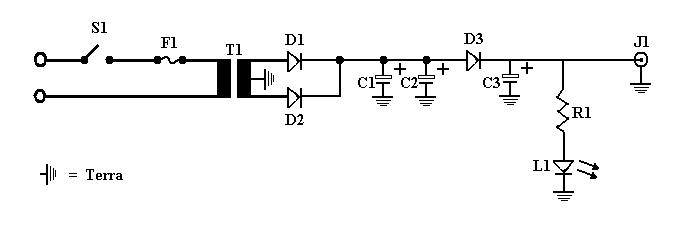
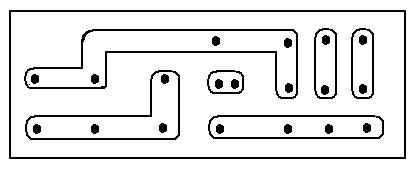
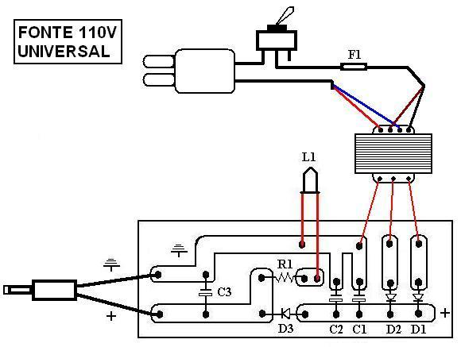

Como montrar uma fonte universal para seu video game
:::. Por Gigacom - Video games antigos de diferentes marcas, ao menos costumam ter uma coisa em comum: a fonte. As especificações dessas fontes são muito parecidas, variando pouquissimo entre uma e outra, porém essa variação normalmente ocorre apenas na potência da fonte ou polaridade no conector.
____________________________________________________________________________
NOTA: este projeto é indicado para pessoas que tenham ao menos algum conhecimento em eletrônica (aulinhas de fisica do 3º ano já ajudam). Não me responsabilizo por incêndios, choques elétricos, acidentes com ferro de solda, danos em aparelhos eletronicos, fanfarronice de irmão pequeno, mordida de cachorro ou qualquer outro desastre ou imprevisto que possa ocorrer. O esquema abaixo funciona perfeitamente, mas faça e use tudo por conta e risco.
É verdade, basta conferir. A diferença da fonte do Mega Drive e do NES é apenas a amperagem (e consequentemente a potência), pois o Mega Drive consome umas 3 vezes mais energia que o NES, porém os outros valores das fontes desses dois consoles são iguais: voltagem, frequência, etc. A grande maioria desses consoles antigos usam fontes de 9V que variam somente na potência que oferecem e no plugue que conecta a fonte ao console. Portanto, é possivel que uma única fonte, com a voltagem certa e potência abudante (porém não excessiva) possa servir em vários consoles, o que é uma grande vantagem em vários aspectos, principalmente para quem possui muitos consoles.
Aqui apresento o esquema de uma fonte com entrada bi-volt (110V ou 220V) saída de 9V com potência de 1,5A, que servirá muito bem para a maioria dos consoles antigos. Abaixo está uma lista de vários consoles que suportam essa fonte, porém é possivel que muitos outros sistemas tambem aceitem essa fonte (se as fontes originais desses video games tiverem especificações compativeis):
Mega Drive 1, 2 e 3
Master System 3
(algumas versões, falo mais adiante)
Sega CD 1 e 2
CDX
32X
Game Gear
Super Nintendo
Phantom System
NES
MSX do tipo Hotbit, TK, Gradiente e outros.
Pode suportar MSX alterados, que possuem
hardwares e componentes extras não originais.
Ha de se notar que algumas versões de alguns consoles não são suportadas, ou precisam de alguma intervenção maior para que funcionem. Por exemplo, há várias versões do Master System 3 lançadas pela Tec Toy, e somente uma delas é compativel com esta fonte, pois internamente ela apresenta uma fonte de 9V e não aquela comum que distribui uma tensão de 12V e outra de 5V. O problema é que, como nesse exeplo do MS3, não há como saber que tipo de fonte é a do console se não o abrirmos e verificarmos. O Mega Drive 3 tambem pode apresentar o mesmo problema, pois as ultimas versões lançadas pela Tec Toy tambem apresentam uma fonte diferente da original (já vi que tem uma fontezinha mixuruca de 5V...). Mas via de regra, a maior parte dos consoles citados lá em cima, com excessão do Master System 3, são perfeitamente compativeis com esta fonte. Caso você tenha alguma duvida, ou precise de ajuda para identificar se a fonte do seu MD3 ou MS3 é compativel, só postar sua duvida lá no Trombone que lhe ajudo.
RECEITA DO BOLO
Então, o que é preciso para montar uma dessas fontes maravilhindas? Anote aí no seu caderninho de compras:
1 Interruptor simples, de um polo e de uma via, que suporte correntes de até 250V (apenas por segurança)
1 Fusivel 200mA/250V
1 Transformador com primário 110V e 220V e secundário 9+9V para 1500mA
3 Diodos retificadores 1N5402
1 Capacitor cerâmico 100nF (ou 0,1μF)/50V
2 Capacitores eletrolíticos de 1000 μF/35V
1 Resistor de 1000 ohms/0,25W
1 Diodo emissor de luz, ou vulgo LED de qualquer cor
1 Cabo de energia com tomada, com fio de pelo menos 2,5mm de espessura
1 Placa de montagem para circuitos. Pode-se usar uma protoboard, mas recomendo que se use uma placa mesmo para este fim, de tamanho adequado e boa qualidade, pois alguns componentes dessa fonte tendem a esquentar bastante.
1 Santinho, copo com água abençoada, amuleto cabalistico, cordão de pai de santo, trevo de 4 folhas ou algo do tipo equivalente na sua religião, para abençoar o trabalhão todo que você terá.
E por fim... conectores. Para escolher os que irá usar, melhor levar seu console até a loginha de eletrônica na hora de comprar esses componentes, e ver quais conectores se encaixam melhor no video game.
COMO SE FAZ O BOLO
Antes de mais nada, é preciso saber como funciona tudo e onde será soldado e feito as conexões e soldas. Para isso, usamos um esquema eletrico que indica todo o circuito e seus componentes. Veja a ilustração abaixo:

Essa ilustração mostra onde cada componente será ligado, abaixo você confere a legenda que indica a que se refere cada item acima aos componentes da fonte:
S1 = Interruptor simples, de um polo e de uma via, que suporte correntes de até 250V (apenas por segurança)
F1 = Fusivel 200mA/250V
T1 = Transformador com primário 110V e 220V e secundário 9+9V para 1500mA
D1, D2, D3 = Diodos retificadores 1N5402
C1 = Capacitor cerâmico 100nF (ou 0,1μF)/50V
C2, C3 = Capacitores eletrolíticos de 1000 μF/35V
J1 = Saída da fonte. O polo positvo do conector deve ser soldado aqui, o negativo no ponto do Terra.
R1 = Resistor de 1000 ohms/0,25W
L1 = Diodo emissor de luz, ou vulgo LED de qualquer cor
Para que você entenda, vou explicar agora como funciona essa fonte:
1 - O interruptor simples no inicio do circuito serve para fazer com que a corrente eletrica passe pelo circuito, fazendo com que a fonte entre em operação. O fusivel tem por finalidade proteger a fonte contra descargas eletricas maiores que a suportada pelo transformador, evitando assim que o aparelho à ela ligada seja danificado.
2 - O transformador converte a tensão de 110/220V (de acordo com o que é indicado na chave, que mostrarei mais adiante como funciona) para 9V à 1500mA, porém essa corrente que saí do transformador não pode ser ligada diretamente ao console, pois ainda está em AC (corrente alternada). Os outros componentes do circuito tratam de transformar a corrente AC em DC (corrente continua) na qual os consoles trabalham.
3 - O LED indica se a fonte está ligada ou não. Pode parecer besteira para alguns, mas é muito util para a maioria das pessoas saber se a fonte de fato está ligada, principalmente quando se liga ela numa tomada ruim ou algo do tipo.
Agora que você conhece o circuito eletronico da fonte e a função de seus componentes, vamos à montagem.
FAZENDO O BOLO
A placa onde deverão ser soldados os componentes deverá obviamente seguir o mesmo esquema elétrico citado acima. Abaixo ilustração de como seria uma placa ideal para montagem desses componentes:

A confecção de uma plaquinha igual à esta mostrada acima não costuma sair barato, e não raro a qualidade acaba sendo pior do que se montar tudo numa protoboard. Porém aquelas plaquinhas para montagem de circuito com vários furos, tambem conhecida como placa de ponte para circuito eletrico, serve perfeitamente bem para esse projeto, bastando que você siga as orientações das ilustrações mostradas acima.
Agora só falta saber onde soldar cada coisa nessa plaquinha. Porém antes é preciso notar que o transformador tem uma configuração propria para ser ligado na corrente eletrica (ou tomada se preferir). Uma configuração faz com que o transformador trabalhe aceitando corrente de 110V e outra aceitando somente 220V. É importante que você saiba disso veja a ilustração abaixo

No exemplo acima, o transformador usado possui 4 fios de uma cor diferente cada, para a entrada da corrente: vermelho, azul, preto e marrom. Para que a fonte fique configurada para funcionar em 110V, os fios azul e vermelho devem ser ligados à um dos fios da tomada, e os fios preto e marrom ao fio que saí do fusivel. Para configurar a fonte para que funcione à 220V, basta unir o fio azul ao marrom, ligar o preto no fio que sai da tomada e o vermelho no fusivel. Claro que você pode optar por usar uma chave 110V/220V iguais aquelas que existem em várias fontes por aí, funciona da mesma forma (basta soldar tudo do jeito certo). Cada transformador possui um esquema proprio para a configuração da entrada de energia, e normalmente esse esquema vem junto com o transformador, seja por uma etiqueta colada nele, ou mesmo instruções na caixa onde ele possa vir acondicionado.
É preciso soldar o fio positivo e o terra no conector que irá ser ligado no video game. Normalmente o centro do plugue é positivo e a parte externa negativa. Isso pode variar, é raro, mas acontece, porém normalmente o positivo sempre será no centro.
Por fim, pegue um multimetro, ligue a fonte, e faça uma medição. Normalmente, com a fonte sem estar ligada em um console, a voltagem pode alcançar um valor máximo de 13,5V, mas normalmente não passa dos 12V. Isso é normal, não se preocupe, pois quando algum sistema é ligado na fonte a tensão baixará para os 9V e ficará estavél.
COMENDO O BOLO
Prontinho! Essa é a receita de como construir a sua propria fonte universal. Ela funciona super bem e irá lhe quebrar um galhão, sem falar que é ideal para evitar a montoeira de fios e fontes que encontramos atrás da estante de todo bom colecionador.
Duvidas, declarações de amor, elogios e agradecimentos, já sabem, só postar no Trombone. Se tiver algo a reclamar vá te catar, porque fazer esse esquema todo me deu um baita trabalhão e não tô a fim de escutar nhé-nhé-nhé.
Beijos povo!
Acesse o Trombone e comente sobre essa matéria!


O Master System 3 foi mais fatiado que carne de segunda antes de ser moída... tiraram o suporte ao óculos 3D, colocaram uma travinha meio vagabunda para servir de liga/desliga, sumiram com o botão reset e com as saídas A/V... ...